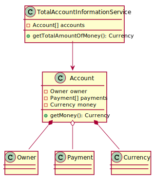

ourclass conclude 3
infix fun conclude(other: Int): Int
{return value + other}
- Simon Schell
- Level 24
- Java, Kotlin, Typescript
- Provinzial Rheinland
ourclass + 2
operator fun plus(other: Int): SpecialInt {
return SpecialInt(innerValue + other)
}
operator fun SpecialInt.plus(other: SpecialInt): SpecialInt {
return SpecialInt(innerValue + other.innerValue)
}
fun calculate(): Int {
val s1 = SpecialInt(7)
val s2 = SpecialInt(5)
return s1 - 4 + s1 + 4 + s2 - s2 + 0.2 conclude 6
}
SimpleCalculationsKt.plus(
SimpleCalculationsKt.minus(
this.plus(
this.plus(
s1.minus(4), s1
).plus(4), s2)
, s2)
, (Number)0.2D)
.conclude(6);
typealias Array = EvilOutsider
package ourcompany.ourapplication
typealias OurClass = EvilOutsider

package ourcompany.account.service
typealias Array = EvilArray
--------------------------------------
package ourcompany.account
typealias Array = EvilArray
class MyThread {
fun initializeThreads(classLoader: ClassLoader) {
thread(contextClassLoader = classLoader) {
println("Left side thread started")
}
thread(contextClassLoader = classLoader) {
println("Right side thread started")
}
}
}
class ThreadTest : StringSpec() {
init {
"Executing the Threads" {
MyThread().initializeThreads(URLClassLoader(urls))
}
}
}
class ThreadTest : StringSpec() {
init {
"Executing the Threads" {
MyThread().initializeThreads(URLClassLoader(urls))
}
}
}
typealias URLClassLoader = EvilClassLoader

- Email: sisc.develop@gmail.com
- Twitter: @SoSayethSimon
- Github: SoSayethSimon
- Repo: https://github.com/SoSayethSimon/Evil-Kotlin-Quicksession